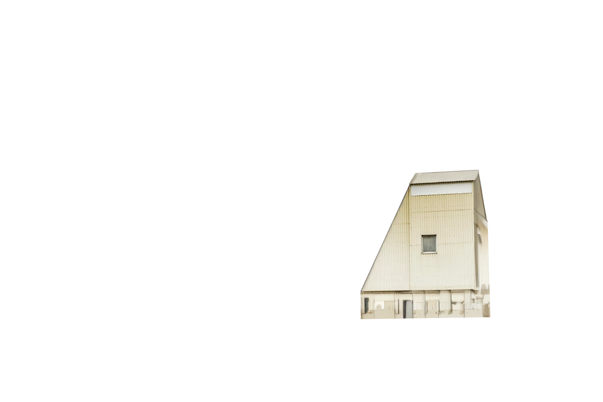
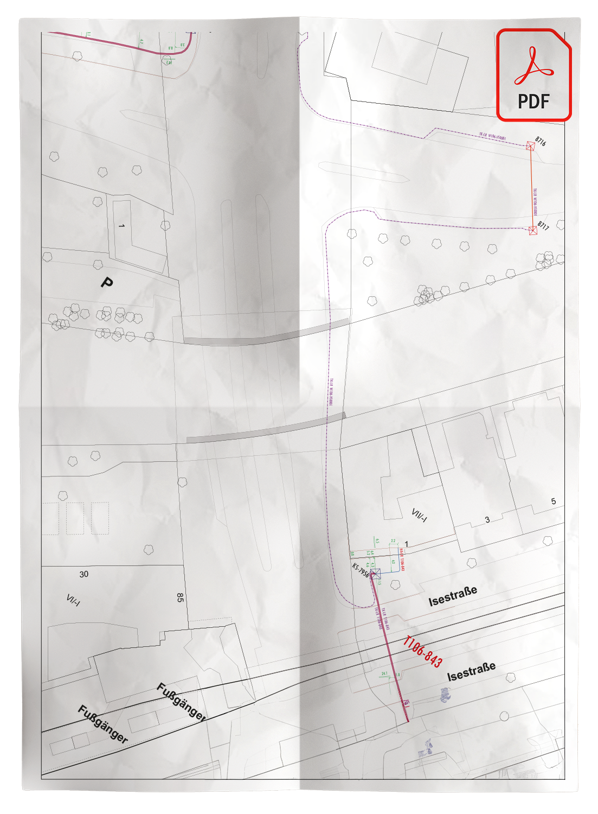
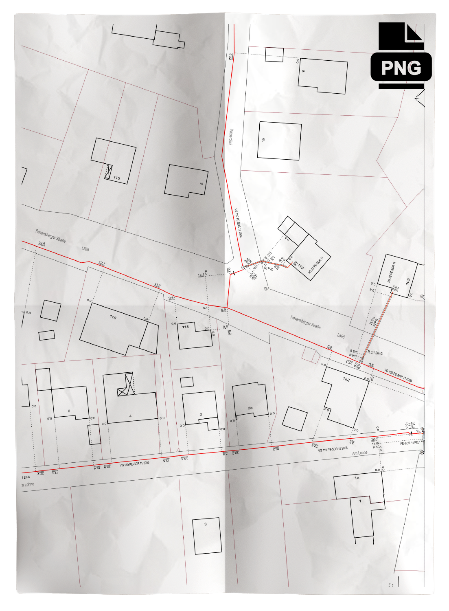
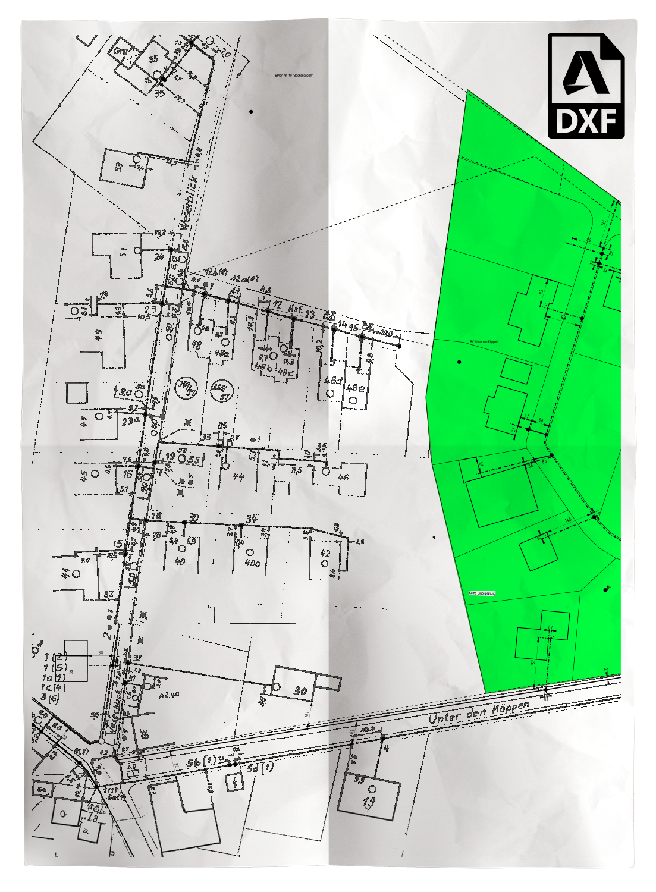
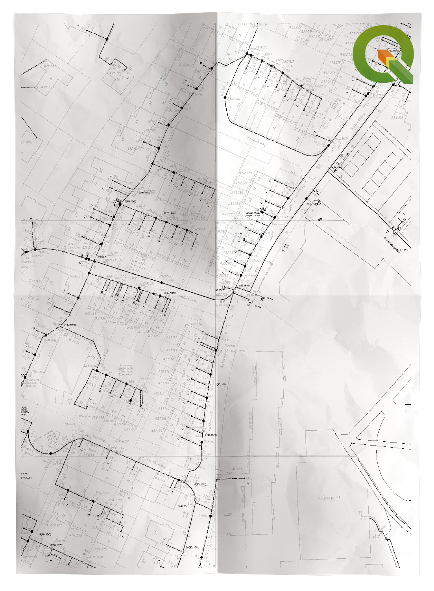
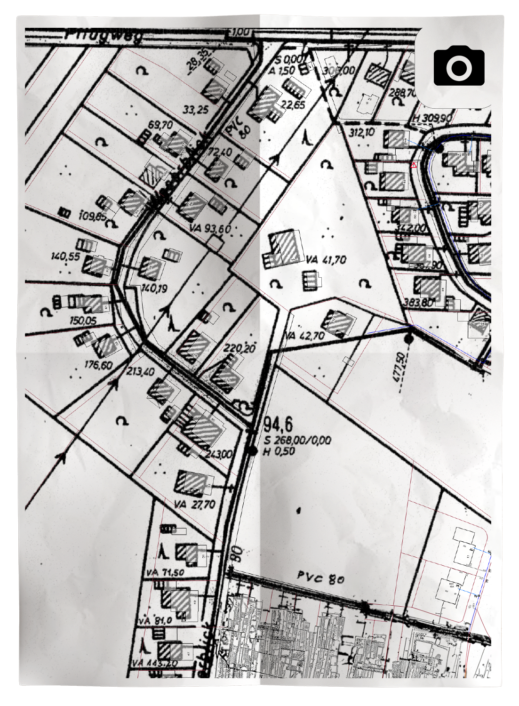
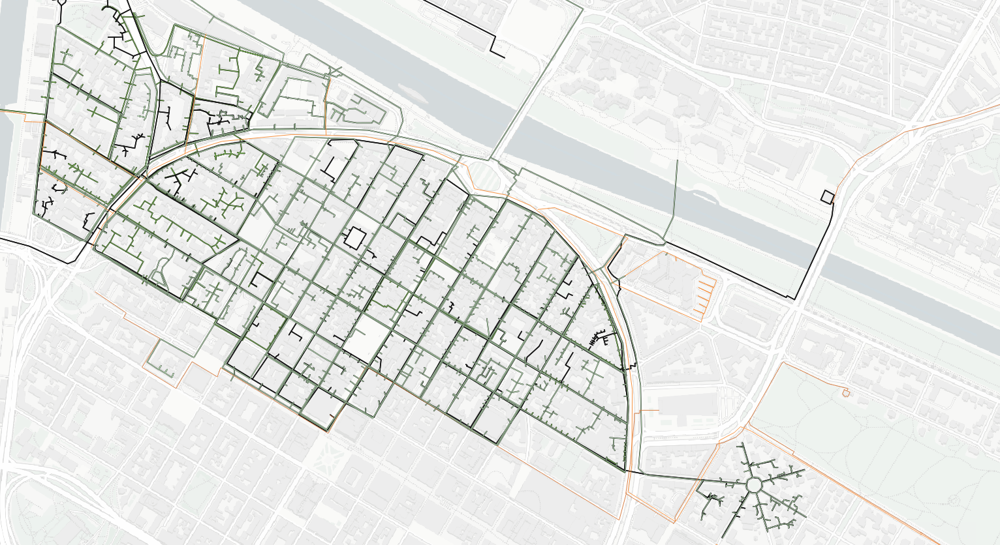

Ingenieure
Nidderau
Ozan Toptaner
Projekt ansehen
Sparen Sie sich die Recherche und Digitalisierung von unstrukturierten Leitungsplänen und konzentrieren Sie sich auf Ihre Hauptleistung

Wer am Anfang eines neuen, großen Projektes steht, weiß, wie aufwendig die Informationszusammenfassung ist. Durch Wohlstand und Fortschritt werden Ver- und Entsorgungsleitungen in Deutschland seit über 100 Jahren unterirdisch verlegt. Da aber jeder Leitungseigentümer die Dokumentation seiner Leitungen auf eigene Art und Weise hält, liegen Unmengen an Informationen, in verschiedensten Formaten an unüberschaubar vielen Stellen vor

Das Zusammenführen, Sichten, Filtern und Vereinheitlichen von Fremdleitungsdaten ist zeitintensiv, da eine Vielzahl an unterschiedlichen Informationen von verschiedensten Stellen vorliegt.

Die Menge an Daten und die Komplexität im Umgang mit diesen führt zum Bedarf an Fachkräften mit Know-How. Im aktuellen Rausch der Digitalisierung sind deren Kapazitäten stark begrenzt.
Die Verzögerung der Informationszusammenstellung sowie mangelnde Qualitätsstandards dabei können die Projektergebnisse negativ beeinflussen.

Fremdleitungsdaten liegen in unterschiedlichen Raster- und Vektorformaten vor, was die Verarbeitung und Integration in bestehende Systeme erschwert und besonderes Know-How im Umgang mit Geodaten erfordert

Sie stehen oft vor einer Vielzahl an Informationen, Plänen und Daten, die besonders bei großen Projekten unübersichtlich sein können
Statt eigenständig dutzende Trassenpläne bei 20-50 Betreibern einzuholen, nur um dann Informationen in unterschiedlichen Formaten zu erhalten, erhalten Sie bei uns einen einzigen Plan. Das spart Ihnen Zeit und Nerven. Zeit, die Sie für andere Aufgaben aufwenden können und Nerven, die Sie vermutlich im späteren Projektverlauf brauchen.






Wir passen unsere Leistungen exakt an Ihre spezifischen Bedürfnisse und Projektanforderungen an. So erhalten Sie maßgeschneiderte Lösungen, die perfekt auf Ihr Vorhaben abgestimmt sind.
Wir sorgen für eine klare und einheitliche Darstellung Ihrer Planungsunterlagen. Ob DWG, DXF oder ein anderes Format – Sie bestimmen das Ausgabeformat, und wir liefern es.
Mit uns ist der Datenkonvertierungsprozess ein Leichtes. Wir wandeln Pläne zuverlässig von PDF in DXF und von DXF in QGIS um – schnell und präzise.
Zeit ist kostbar. Deshalb garantieren wir Ihnen eine zügige Bearbeitung Ihrer Aufträge, ohne dabei Kompromisse bei der Qualität einzugehen.
Wir bieten Ihnen die Möglichkeit, Ihre Pläne individuell zu attribuieren. So können wichtige Informationen präzise und übersichtlich dargestellt werden.
Mit unseren durchdachten und genau abgestimmten Lösungen schaffen wir eine solide Grundlage für Ihr Projekt – für maximale Planungssicherheit und den Erfolg Ihrer Vorhaben.
Schritt für Schritt Anleitung, wie eine zusammenarbeit mit uns aussehen würde
Wir vereinbaren ein unverbindliches persönliches Erstgespräch, um Ihre spezifischen Anforderungen und die Größe des Projekts zu ermitteln. Hier klären wir, welche Art von Unterstützung Sie benötigen.
Sie besorgen die benötigten Trassenpläne:
-Sie können diese selbst bereitstellen.
-Alternativ können Sie Pläne von einer Leitungsauskunftsfirma Ihrer Wahl beziehen.
-Auf Wunsch übernehmen wir die Leitungsauskunft für Sie als Komplettpaket.
Wir sammeln alle relevanten Daten und erstellen daraus einen digitalen Gesamttrassenplan in Ihrem Wunschformat. Dieser wird Ihnen vollständig und strukturiert zur Verfügung gestellt.
Mit dem fertigen Gesamttrassenplan können Sie sorgenfrei, strukturiert und effizient Ihr Bauvorhaben weiterführen. Unsere Planungslösung ermöglicht es Ihnen, Zeit und Aufwand zu sparen.
Deshalb vertrauen unsere Kunden auf uns